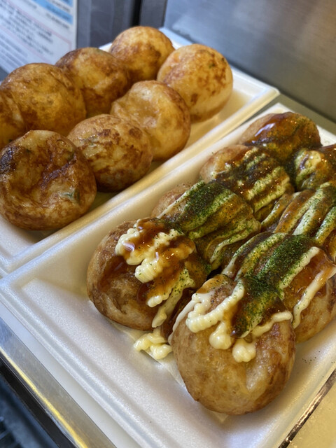

Kae Moriki
- hometown 大阪（あべのハルカスの近くに住んでいます）
- hobby 旅行、食べること（新しいお店発掘）、人間ウォッチング、散歩
- previous job 航空会社の貨物部で働いていました
近所で好きなたこ焼き屋 やまちゃん
おすすめの味はごま油塩

近所で好きな焼き鳥屋 秋吉
おすすめのメニューは純けい
おすすめの味はごま油塩
おすすめのメニューは純けい